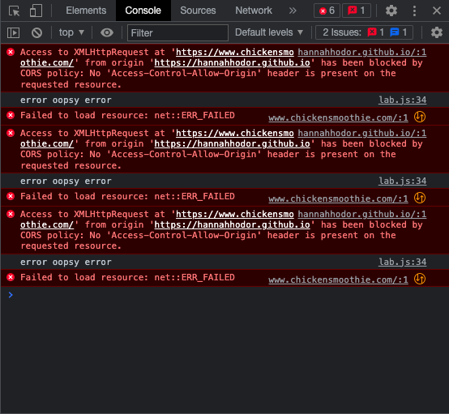

by Emily Baer and Hannah Hodor
For this lab, we experimented with jQuery and AJAX.
It took some time figuring out how to get the html and use and manipulate endpoints that weren't just json (or more complex endpoints in general). For the bonus, we had trouble loading the source of the link in the output div on the browser.
Screenshot of the console showing an access error on the browser.